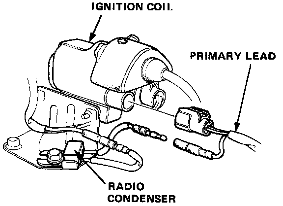
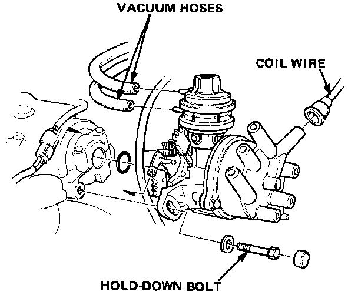
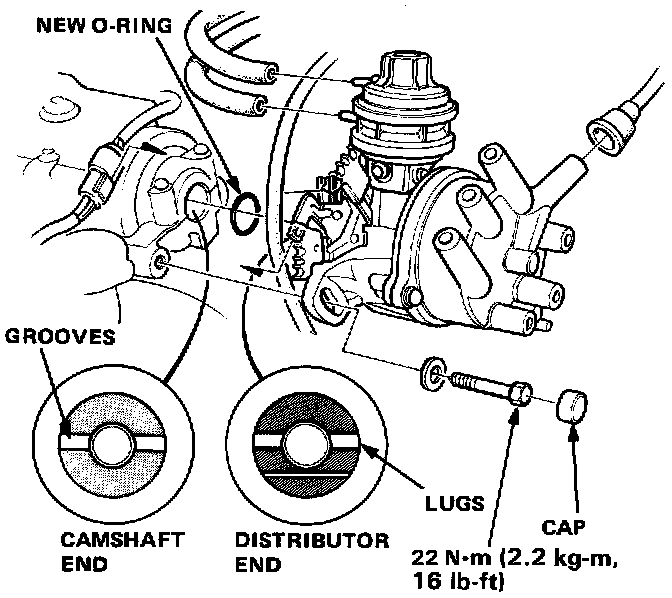
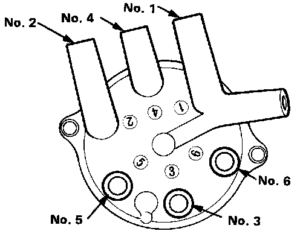

Distributor Removal/Installation - Sedan
Removal
1. Disconnect the primary lead from the ignition coil and radio condenser.
2. Disconnect the spark plug wires and coil wire from the distributor cap.

3. Disconnect the vacuum hoses from the advance diaphragm.
4. Remove the distributor hold-down bolt, then remove the distributor from the cylinder head.
Installation
1. Coat a new 0-ring with engine oil then install it.

2. Slip the distributor into position.
NOTE: The lugs on the end of the distributor and its mating grooves in the camshaft end are both offset to eliminate the possibility of installing the distributor 180° out of time.
3. Install the hold-down bolt and tighten temporarily.
4. Connect the coil wire to the distributor cap and the vacuum hoses to the advance diaphragm.
5. Connect the primary lead to the ignition coil and radio condenser.

6. Connect the spark plug wires as shown.
7. Set the ignition timing with a timing light.
8. After adjusting, tighten the hold-down bolt, then install the cap on the bolt.